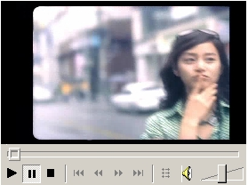
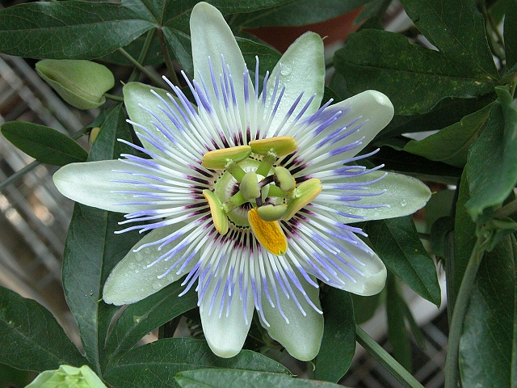

....................██...........................██Cute Wife - 20051219
My wife will calm down before too long.what is the the reason why a kangaroo go to sea? - 20051201
케로로중사 - 20051201
Club NB - 20051119
New Ideas From Dead Economists - 20051119
Adam Smith Invisible hand and Invisible foot. 오랜만에 책에 줄을 그어 본다.
I'm back again - 20051114
.................█......█.....................█▒▒█
..............█...▓▓.█...................█.▓▓▒█
...........█...▓▓▓..█.................█..▓▓▓▒█
.........█.....▓▓▓...███████...▓▓▓.▒█
.......█.....................................................▒▒█
.....█.........................................................▒▒█
...███████..............................███████
.█.............................................................▒▒▒█
█......██................................................██▒▒█
█......██................................................██▒▒█
█..................................................................▒▒█
█..........▓▓▓....█.........█.........█....▓▓▓...▒▒█
█.......▓▓▓▓▓....███...███....▓▓▓▓▓▒▒█
...█......▓▓▓....................................▓▓▓▒▒█
......███.......................................▒▒▒███
...............████████████████
........................█▓▓▓▓▓▓▓▓█
.....................██............▒▒▓▓██
..................█▒█...............▒▒▓█▓█
...............█▒██...............▒▒▓██▓█
............█...█...█...............▒▒▓█...█▒█
.........█...█......█...............▒▒▒█......█▒█
......█...█.........█...............▒▒▒█.........█...█
.........█............█............▒▒▒▒█............█
...........................█▓█......█▓█
...........................█▒█......█▓█
...........................█▒█......█▒█
...........................█...█......█▒█
...........................█...█......█▒█
...........................█...█......█...█
It's fun to just see them. - 20051030
Heart Egg - 20051027
Hydrangea - 20051022
Our hydrangea was trashed by all the snow we had this winter. It lives in the nook of our front steps and there were at least two times this winter where that entire nook was completely filled with snow (and where I often piled up shoveled driveway snow on top of that as well) and when the snows finally melted, the plant looked all but dead. But it came back and has these huge, glorious flowers now. This shot was taken in evening light in the macro mode. I found that setting the white balance to fluorescent lighting gave me the closest match to true colors. Exposure info: f/2, 1/80. ---------------------------------------------------------------------------- photo from http://www.raggedcastle.com/webcrumbs/archives/cat_photography.htmlConcept Cars - 20051018

Black Eyed Peas - 20051015
William, Taboo, Fergie, apl.de.ap "Shut Up" - Elephunk "Where Is The Love" - Elephunk "Bump It" - Monkey Business밥은 먹고 다니냐? - 20051009
Mysterious And Beautiful Eye - 20051007
Cats - 20051007

Cicada - 20051001
Her(his) name is "cicada". 맴맴 매미Shut Up - 20051001
Deep Sky - 20050928
애욕전선 이상없다. - 20050926
겁을 일시불로 상실한 녀석 그건 또 무슨 오락실에서 수학문제집 펴는 소리냐? 이제 보니 당신은 배려꾸러기군요. 도대체 당신의 그 배려는 신체의 어느 기관에서 나오는 건가요? 아! 메가톤급 외로움이 텍사스 소떼처럼 몰려오는구나…. 당신, 이 방대한 스케일의 카드 값은 뭐지? 제가 이래봬도 국가공인 재롱자격증 2급입니다.Mafalda - 20050911
Dad:Through answering to your children simply and clearly, you can maximize to strengthen the ties between you and child. Dad:..simple and clearly. Ok. From now on, I'll answer to Mafalda like this. Mafalda:Dad, why do mankind make trouble all the time? Mafalda:Is he sleeping?Playing Capoeira Music - 20050910
Elite Mei - 20050904
Escher - 20050904
RSA(Rivest, Shamir, Adleman) - 20050830
Euclid's Algorithm - 20050830
GCD(a, b) = ? a, b, t, r are non-negative integers. a > b a = b*t + r GCD(a, b) = GCD(b, r) a = b*t GCD(a, b) = b ------------------------------------ GCD - Greatest Common Divisor LCM - Least Common MultitpleKim Tae Hee - 20050826
Where is the flawless soul? - 20050821
O seasons, O chateaus! Where is the flawless soul? 오 계절이여, 오 성이여! 어디 상처없는 영혼이 있으랴?Egon Schiele - 20050821
Egon Schiele “Self-Portrait with Lowered Head”, 1912
Shark - 20050821
I'm Happy. - 20050820
Sympathy For Lady Vengeance 미학오디세이1 코드북 이승훈의 현대회화 읽기 비밀과 음모의 세계사 Adidas M EARLY AM SL A fun movie, several books, Getting togehter with long time no see former coworkers, A Cool shirt, Baduk, Capoeira, Sweet rest. I'm Happy.Miguel de Cervantes - 20050811
CERVANTES May I set the stage? I shall impersonate a man. Come, enter into my imagination and see him! His name... Alonso Quijana... a country squire, no longer young... bony, hollow-faced... eyes that burn with the fire of inner vision. Being retired, he has much time for books. He studies them from morn to night and often through the night as well. And all he reads oppresses him... fills him with indignation at man's murderous ways toward man. And he conceives the strangest project ever imagined... to become a knight-errant and sally forth into the world to right all wrongs. No longer shall he be plain Alonso Quijana... but a dauntless knight known as - Don Quixote de La Mancha! DON QUIXOTE Hear me now Oh thou bleak and unbearable world, Thou art base and debauched as can be; And a knight with his banners all bravely unfurled Now hurls down his gauntlet to thee! I am I, Don Quixote, The Lord of La Mancha, ? My destiny calls and I go, And the wild winds of fortune Will carry me onward, Oh whithersoever they blow. Whithersoever they blow, Onward to glory I go! SANCHO PANZA I'm Sancho! Yes, I'm Sancho! I'll follow my master till the end. I'll tell all the world proudly I'm his squire! I'm his friend! DON QUIXOTE Hear me, heathens and wizards And serpents of sin! All your dastardly doings are past, For a holy endeavor is now to begin And virtue shall triumph at last! (Don Quixote and Sancho Panza mount their horses and set out along a road) DON QUIXOTE I am I, Don Quixote, The Lord of la Mancha, My destiny calls and I go, And the wild winds of fortune Will carry me onward, Oh whithersoever they blow! SANCHO I'm Sancho! Yes, I'm Sancho! I'll follow my master till the end. I'll tell all the world proudly I'm his squire! I'm his friend! DON QUIXOTE, SANCHO Whithersoever they blow, Onward to glory I {we} go! http://macdubu.egloos.com/1947258All Blacks - 20050810
All Blacks 3S Replica Jersey S S
Beautiful, Happy, Cute - 20050810
Sonoluminescence - 20050808
A bubble collapse results in a liquid jet pushing through the bubble from top to bottom. This example is thought to occur in hydrodynamic cavitation phenomena such as pitting of ship propeller blades.Don Quixote - 20050804
http://www.scathach.de/dore/quixote/don01.htm I'm so so sad. 많이 슬프다.
Echelon Project - 20050804
Blue Passion Flower(시계꽃) - 20050803

Song of Bacchus(바쿠스의 노래) - 20050731
How beautiful is youth, That flees so fleetingly by Let him be who chases joy For tomorrow there is no certainty. 청춘은 이 얼마나 아름다운 것인가. 그러나 순식간에 사라져버린다. 즐기고 싶은 자는 지금 당장 시작하라. 확실한 내일은 없는 것이니.Griffin - 20050618
I like this sort of illustration cuts. more mythical creatures
Under The Sea - 20050612
hyllidia Varicosa(갯민숭달팽이)
Green Turtle(바다거북)
Spine Checked Anenome Fish
Paraluteres prionurus, Mimic filefish, 톱쥐치
Giant Clam
Have a good day. - 20050607
Horn Bill - 20050606
Cat And Goldfish - 20050526

Terex Titan Truck- 20050526

Maxican Red Kneed Tarantula - 20050522

Avenue of the Baobabs - 20050515

Green Bush Viper - 20050515
Secretary Bird - 20050515

Adidas - 20050514

Eastern Tiger Salamander - 20050514

Owl Or Eared Owl - 20050514

Dandelion - 20050514
Mini Sport Car - 20050311
Bear And Tiger - 20050301
Good bye - 20050222
When I asked her out, she put on like this look - 20050208
Capoeira Art - 20050131
My New Mother Is An Alien - 20050126